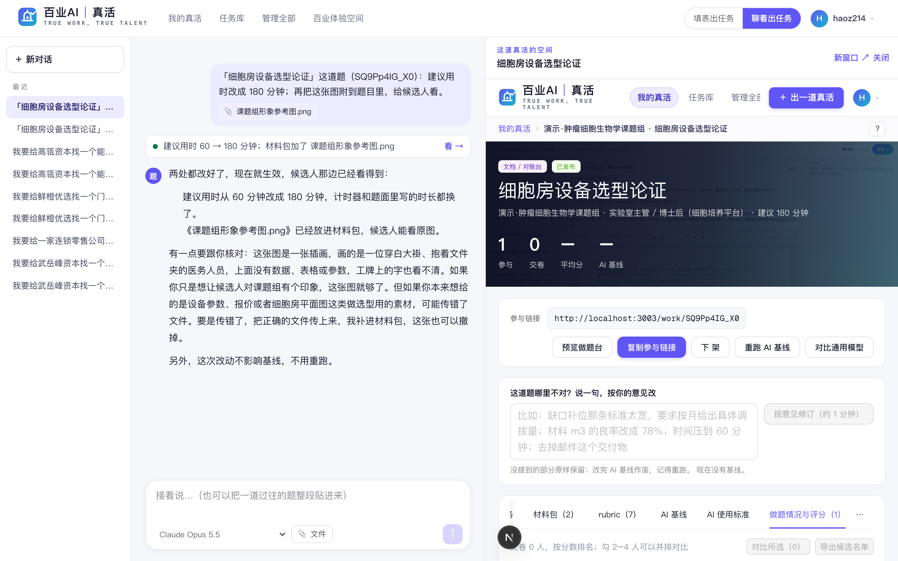

百业AI｜真活 · 操作手册 01
聊着出一道真活
不用一次说全，像跟同事交代一样，说一句最实际的要求就够了。哪家企业、考什么、做多久、要不要给候选人素材——缺的它一件件问；用时、给几年经验的人这类细节，它先按常理定好，最后一行复述给你，你只改不对的。
开头可以这样说
- 「我们缺一个能把销售数据理清楚、说出问题到底在哪的人。」
- 「要招一个能把 IP 形象延展成表情包、海报、短视频封面的设计师，想看他真实干活的样子。」
- 「下个月欧洲客户来审厂，想找个能把交付计划排明白的人，给 3 年以内经验的。」
- 「这是我们去年校招用过的一道题（贴进来或传文件），照这个思路换成今年的业务。」
- 「想给宁德时代出一道真活，还没想好考什么，你先问我。」
不用说的：职位名、评分标准、材料清单、任务书怎么写——这些它会帮你出，出好你再改。
1说一句最实际的要求
右上角点「聊着出任务」。不知道怎么开口，就点下面的例子，它会放进输入框，改成你自己的话再发。

1一句大白话：缺什么样的人、最近卡在哪
2点一个例子，改成你的话再发
- 1一句大白话：缺什么样的人、最近卡在哪
- 2点一个例子，改成你的话再发
2它先记下，再一次只问一件
你说的它先复述一句，接着只问最缺的那一件，比如哪家公司。库里有这家就直接用企业资料；没有就请你说几句。
1你的一句话
2它记下要找的人，接着问：哪家公司
- 1你的一句话
- 2它记下要找的人，接着问：哪家公司
3几句话介绍就行，没想到的它会追问
公司介绍不用写全，几句话够了。题目要用到的东西它会主动问，比如这道 IP 设计题，它会问要不要把 IP 设定图给候选人。
1几句话介绍公司
2它追问：IP 设定图、活动文案要不要给候选人
- 1几句话介绍公司
- 2它追问：IP 设定图、活动文案要不要给候选人
4能点选就点一下
需要你拿主意的地方，它给两三个选项，点一下就行；也可以直接打字回答。

1点一个选项，或者直接打字
- 1点一个选项，或者直接打字
5最后一行复述全题，你只改不对的
企业｜要找的人｜考什么｜建议用时｜给几年经验的人｜素材。你没说的用时、经验段是它按常理定的，不对就点「改一下」说一句。
1一行复述全题：点「就这样出」，或「改一下」
- 1一行复述全题：点「就这样出」，或「改一下」
6有素材就传，等它变成「已就绪」再发
文件可以拖进输入框、直接粘贴截图，或点「📎 文件」；支持 PDF、Word（docx）、Excel、CSV、TXT、图片，单个 20MB 以内。图片要先让 AI 看一遍，十几秒。顺手说一句是「给候选人看的」还是「让你照着出题的参考」，不说默认给候选人。
1黄色 = 还在上传、AI 在看图；变成「已就绪」再发
2没就绪时发送键是灰的
- 1黄色 = 还在上传、AI 在看图；变成「已就绪」再发
- 2没就绪时发送键是灰的
7在右边看题，确认了再发布
不满意直接说哪里不对，比如「材料再加一份竞品数据」「难度降一点」，它会改题；改完记得重跑 AI 基线。

1说「可以，发布吧」就发布了
2这条参与链接发给候选人
3右边是这道题的空间：任务书、材料、从库里取了什么
- 1说「可以，发布吧」就发布了
- 2这条参与链接发给候选人
- 3右边是这道题的空间：任务书、材料、从库里取了什么
8出好以后改用时、岗位名、补文件：直接说
用时可设 20–240 分钟，任务书里写的时长一起改；岗位名一改，题面里的旧名字一起换；补的文件候选人能看原件。这几样马上生效，不用重跑 AI 基线。也可以在这道题的空间里「调整这道题」直接改。

1直接说：用时改成 180 分钟；把这张图附到题目里
2绿点 = 已生效，候选人那边马上看得到
3右边同步：建议 180 分钟
- 1直接说：用时改成 180 分钟；把这张图附到题目里
- 2绿点 = 已生效，候选人那边马上看得到
- 3右边同步：建议 180 分钟
百业AI｜真活 · 编写于 2026-11-05 · 适用 百业AI｜真活 1.2（2026-11-05 线上版本） · 操作手册 01 · 聊着出一道真活